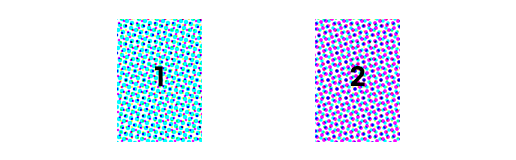

가수의 앨범 컴백에 참여하기?
컴백 예고를 받으면 우리는 늘 비슷한 일을 합니다. 일정을 확인하고 소속사가 하나 둘 던져주는 예고들을 보면서 앨범을 기다리곤 하죠.
티저나 스포일러를 보면서 예상을 하기도 하고, 각종 매체에 올라온 해석 영상들을 보기도 합니다. 하지만 우리는 매번 소속사에서 정한대로의 컨텐츠를 볼 수밖에 없어요.
컴백해서 좋기는 한데, 당최 무슨 이야기를 하려는지 이해가 안 가거나 뜬금없는 사진이나 떡밥들로 당황스러웠던 적이 한 번쯤은 있었을 거라고 생각합니다. 저의 고민은 여기에서 시작했습니다.
팬들이 다 같이 선택하고 즐기는 컴백이 될 수는 없을까요?

여러분은 컴백 앨범의 세계관 속에서 직접 이야기를 선택하며 이에 맞는 티저 이미지를 얻을 수 있습니다. 투표나 댓글을 통해서 가수의 다음 행선지나 행동 등을 정할 수도 있죠.
부디 재밌게 즐길 수 있는 프로젝트가 되길 바랍니다. 감사합니다.